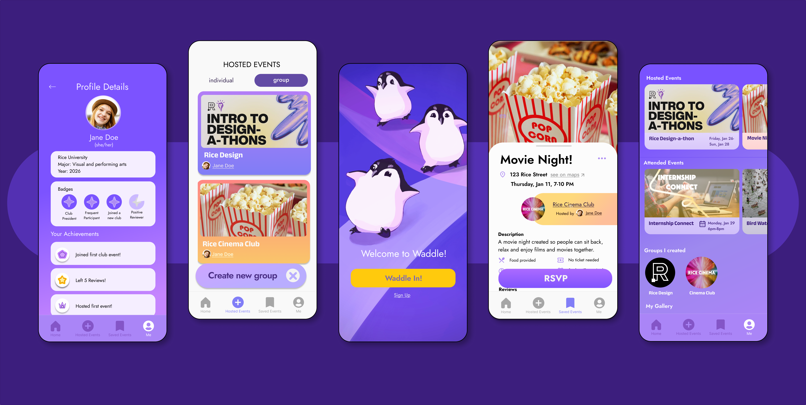
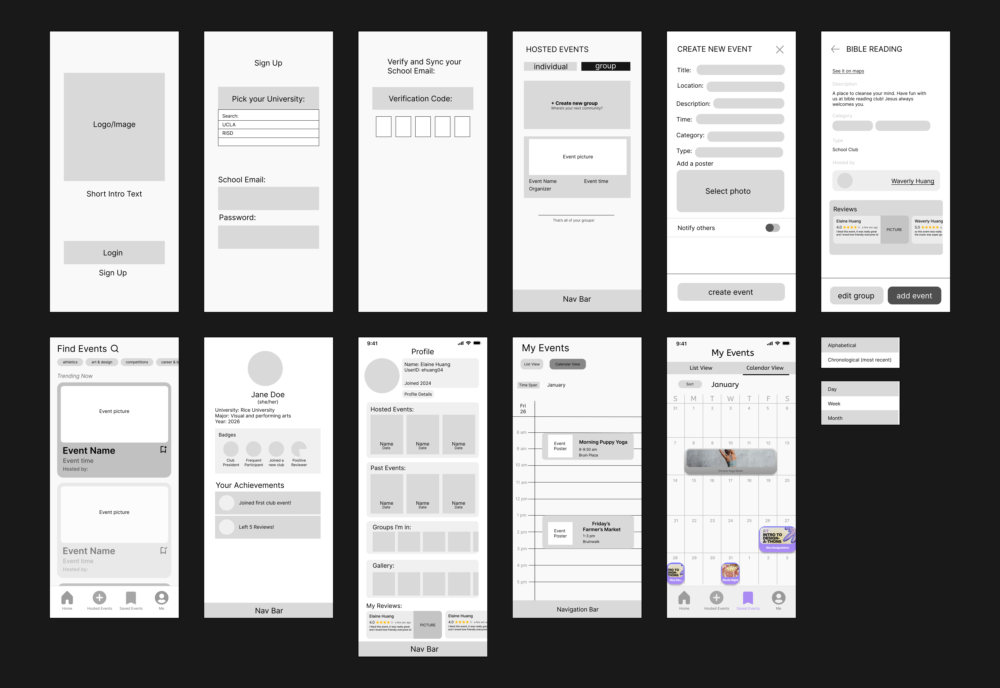
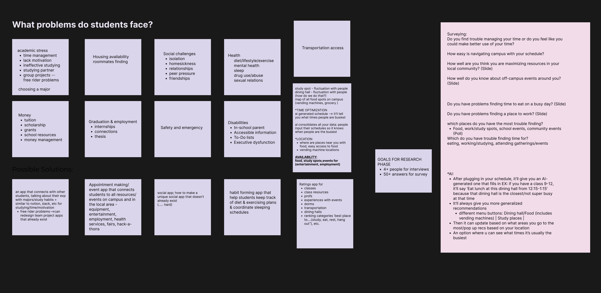
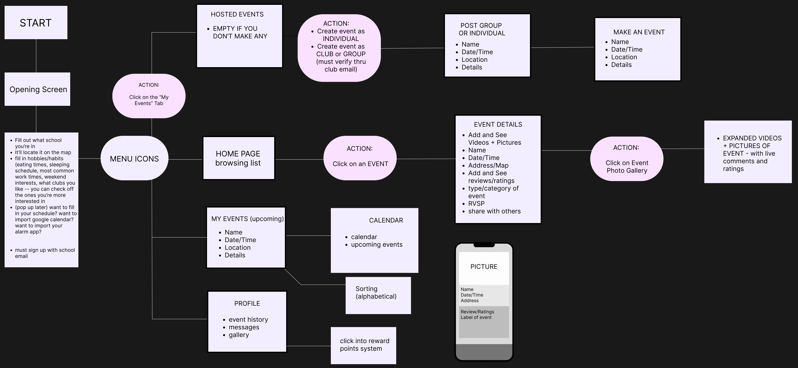

Waddle 🐧
An app which connects students with their peers via easy access to on/off campus community events, and the ability to create events themselves.
00. The Challenge
Create something innovative which solves a problem for students
Loneliness is a huge issue students face: how can we create something that connects them?
What sort of features connect students who live on and off campus, as well as students not in specific clubs?
01. Feature Overview
Key Features
Hosting Events
Friendly, fun UI to encourage students to sign up
Students can create any event they want!
Students can make events as an individual to find likeminded peers
Students can make events as a group with other students to form their own unofficial club
Profile Page
To motivate students to create and attend events, they can earn badges or achievements for:
💜 Hosting or attending events
💜 Leaving reviews
💜 Joining new groups/clubs
Easy to see what events you've attended or hosted
Find Events
All active events are in one place, students no longer have to check multiple platforms
Students can sort events via tags at the top, streamlining the search experience
Event Details
Students can see reviews of events and hosts from their peers (less intimidation!)
Viewing not only pictures, but also videos, of events will let students see what they're really like
02. Pain Points & Data
Survey Highlights
Survey Data Highlights & Answers
93 Total Answers
Experience off-campus disconnect - Only 10.7% of students felt that they knew about off-campus events in their surrounding community
Aren't maximizing campus resources because they lack in specific areas
"I have no time to go these events, and I'm not super interested. They don't give me enough information to attend."
"I feel like I get overwhelmed, I don't know what I'm looking for. I wish it was easier for students to be directly involved."
"I wish I knew about events in general, I usually don't even know when/where they're happening. I just run into them."
"I get intimidated by bigger events. If there were smaller ones hosted by students, I would be comfortable attending more."
Problems & Solutions
❌ Students are intimidated by larger or confusing events
❌ There isn't enough information about events or the hosts
❌ Students don't know about events at all
The Waddle 'Gallery' feature offers both videos and pictures of the event, giving a more intimate look
'Event Details & Reviews' lets students see their peers' firsthand experiences of the event and host
❌ Students don't know how to be more involved on/off campus
❌ Students are unsure of how to create community events
'Hosted Events' allows students to create any event they want, this ensures students can be directly involved
❌ Students aren't motivated to attend or create events
❌ No incentive because of the lack of information or access
'Memories' motivates students to leave reviews because you can level-up in the app by creating more memories through attending or hosting events
03. Wireframes & Process
Design Evolution
Final Wireframes

Low Fidelity Wireframes

Ideation & User Flow


04. Feedback & Lessons
User Feedback
"I really like the UI and branding, fun colors and cute penguin. [...] I would totally use this app to get more visibility on fun things I want to do with other students. That's why the group option is cool."
— Classmate F"Maybe in a future iteration you could think about integrating the penguin more? I really like the branding of the app, it's super fun! I'd totally use it."
— Classmate A"I think your app successfully achieves what you wanted it to. It's different from existing invite or party apps because it's focused on connecting students, and make it easier to find friends."
— Classmate GWhat I Learned
This project really highlighted how existing school event apps, or non-school event apps, are missing key features and values from both. I hope to be able to connect with my peers more, and try to promote events on both RISD and Brown University campus, so more students from both campuses can come together. We don't really do that despite being a walk away from each other.